City Explorer
A hosted web explorer for your place — layers, storylines and points of interest anyone can navigate from a link, on any device, with no install and no training.

We build the models, tools and platforms that let a place be planned, tested and decided before it exists, twinned from real data, georeferenced to a stated CRS, and put in front of the authorities, partners and residents whose decision it is.
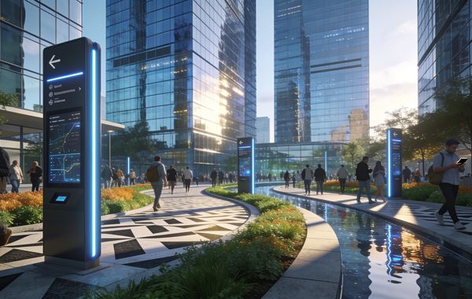
Consultation tools that let residents explore the plan and comment in place.
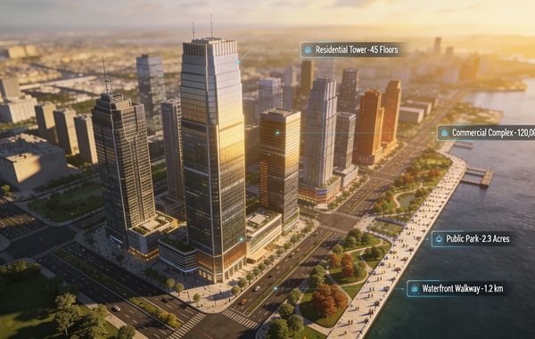
Massing, density, phasing and daylight tested in 3D before committee.
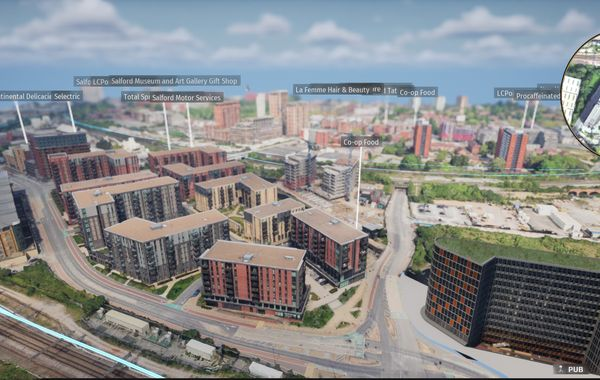
Live replicas of buildings and districts — as planned, or as the real city runs today.
VR, AR and real-time walkthroughs — headset, media table or a browser link.
Cards flip on hover or keyboard focus, with the full description shown in a flat fallback for reduced-motion.
We build living twins of a building, campus, community or city district — BIM, GIS, survey and live sensor data bound into one navigable model, correctly georeferenced and kept current as the plan moves. One shared source of truth for the design team, the client and the authority — and, for the city that already exists, a base the live feeds plug straight into.
Scope this service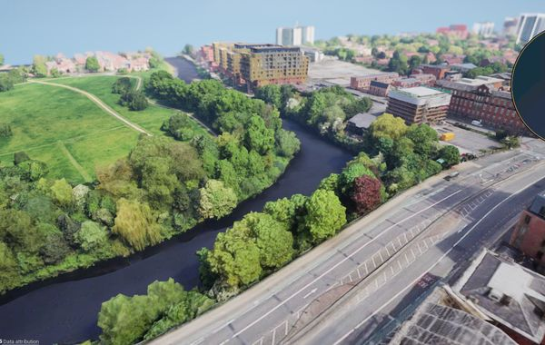
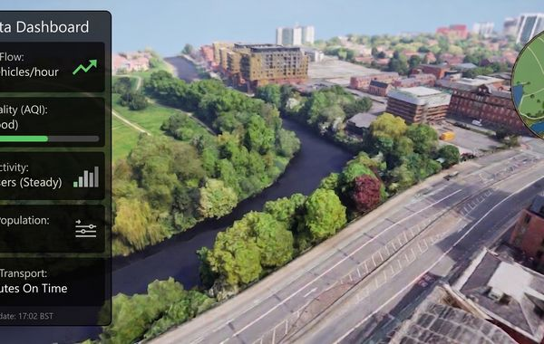
Drag or scroll horizontally · past project stills
Most twins stop at the plan. Ours can carry the live city on top: we connect the APIs and feeds a place already produces — traffic counters and signal systems, bus and rail real-time data, CCTV analytics, air-quality monitors, footfall sensors, energy and building-management systems — and visualise them in the real 3D place, updating as it happens.
For a council or operator that means one screen where the whole town is legible: where the traffic is, which routes are late, where people are gathering, what the air is doing — and the history behind it, so patterns become decisions.
Scope this service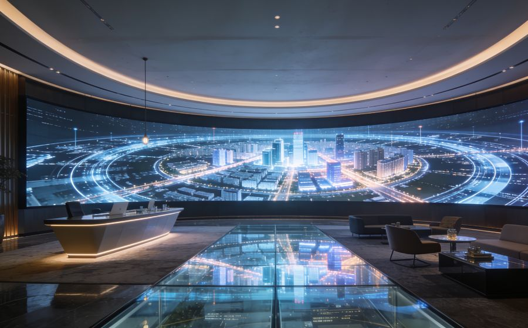
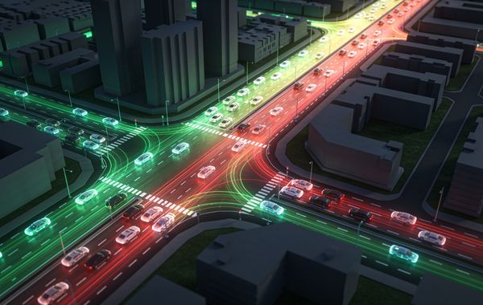
Drag or scroll horizontally · past project stills
Open and operator APIs — TfGM / Bee Network, Network Rail Darwin, DEFRA AURN, council traffic (SCOOT/UTMC) and CCTV systems, LoRaWAN and building-management sensors, and your own databases.
A georeferenced 3D twin with live layers, a place-management dashboard on top, alerts on thresholds, and a time-scrubber to replay any day. Web, media table or ops-room wall.
CCTV is processed to anonymised counts and flows — no faces stored. Every feed sits under the data owner's terms, and the platform is built for public-sector procurement, security and audit.
Real-time experiences built on game engines: guided VR journeys, AR overlays on site or on a physical model, and self-guided walkthroughs that open from a link on any device. Delivered as a headset piece, a media-table installation or a web build — usually all three from one model.
Scope this service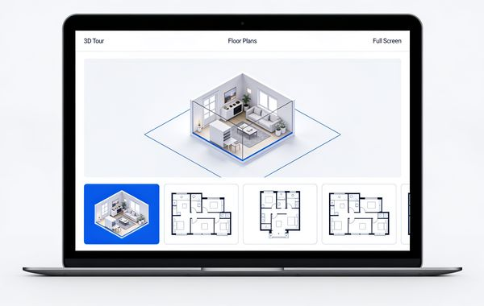
Drag or scroll horizontally · past project stills
Massing, density, phasing, daylight, views, wind and transit access modelled against real context and compared option by option. Verified views and accurate visual impact material for the application — so the case you take to committee is evidence, not artwork.
Scope this service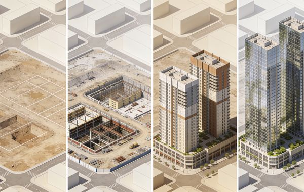
Drag or scroll horizontally · past project stills
A toy version of our masterplan configurator, running right here. Drag the sliders and watch the scheme — and its numbers — regenerate. The full engine runs in Unreal, on your real site.
A simplified browser demo — indicative geometry only. The production configurator adds parking, set-backs, daylight and cost models.
Public-facing platforms that let residents explore the proposal from their own street, compare it against what's there today, and leave comments pinned to the place they're talking about. Everything is logged and exportable, so the consultation report writes itself — and objections arrive informed.
Scope this service
Drag or scroll horizontally · past project stills
This is how consultation feels on our platforms. Click anywhere on the aerial, say your piece, pick a stance — and watch the record build. In the real thing, every pin is logged, mapped and exportable for the consultation report.
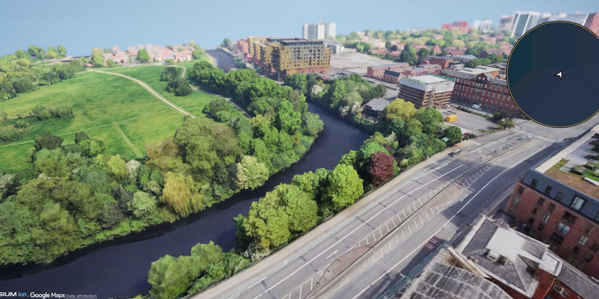
A demo — comments live only on this page and are never saved or sent. The production platform adds moderation, themes, exports and a full audit trail.
Terrain, parcels, transport networks, planning constraints and open city data, pulled together from GIS and public records into one clean context model — georeferenced to a stated CRS, so what you build sits exactly where it belongs. The ground truth every accurate twin, application and visualisation depends on.
Scope this service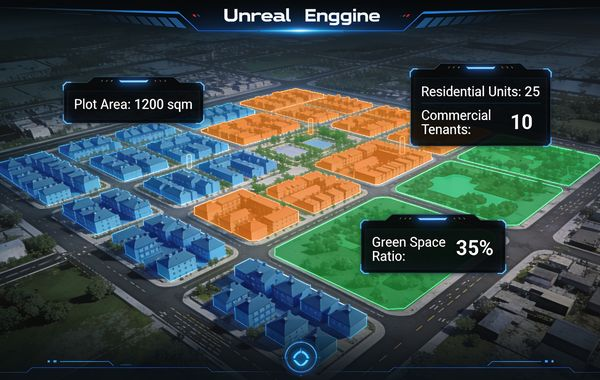
Drag or scroll horizontally · past project stills
Once a place is twinned, the same model drives everything people actually touch — in the room, on the web, and long after the launch.
A hosted web explorer for your place — layers, storylines and points of interest anyone can navigate from a link, on any device, with no install and no training.
A large-format interactive table for the consultation event, exhibition or committee room — the plan as something a group can stand around, drive together and argue over.
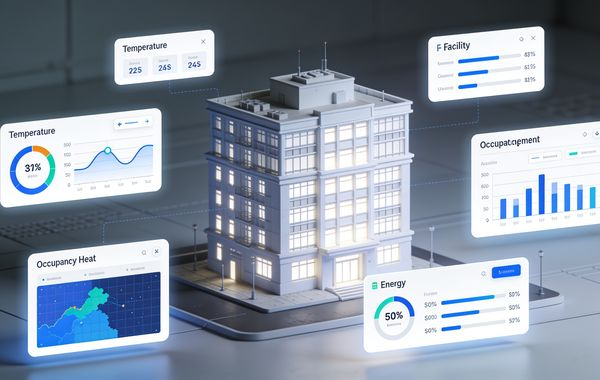
A live dashboard on the twin — traffic, transport, CCTV counts, air quality, occupancy and footfall in one view, so whoever runs the place can see how it actually performs.
Guided headset journeys through the scheme for launches, exhibitions and public events — the closest anyone gets to walking the place before it exists.
Game-engine tools that teach a place — school programmes, public exhibitions and training that make planning and the built environment something people want to explore.
Visitor-centre installations, wayfinding kiosks and projected pieces — permanent fixtures that keep telling the story of a place long after opening day.
One site, three layers, in weeks.
Plan, test and consult on a whole district.
A whole town as a running twin, end to end.
Every engagement is scoped to the decision it has to support. Run the scope estimator for a tier and a timeline, then send us the boundary.
Send us a site boundary. We'll recommend the layers, the tier and a timeline.